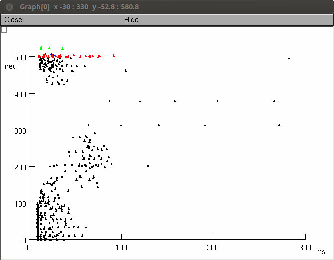

Dentage Gyrus network model associated with the papers:
J. Tejada, G.M. Arisi, N. Garcia-Cairasco, A.C. Roque, Morphological alterations in newly born dentate gyrus granule cells that emerge after status epilepticus contribute to make them less excitable, PLoS ONE. 7 (2012) e40726. doi:10.1371/journal.pone.0040726.
J. Tejada, N. Garcia-Cairasco, A.C. Roque, Combined role of seizure-induced dendritic morphology alterations and spine loss in newborn granule cells with mossy fiber sprouting on the hyperexcitability of a computer model of the dentate gyrus, PLoS Comput. Biol. 10 (2014) e1003601. doi:10.1371/journal.pcbi.1003601.
Abstract
Temporal lobe epilepsy strongly affects hippocampal dentate gyrus granule cells morphology. These cells exhibit seizure-induced anatomical alterations including mossy fiber sprouting, changes in the apical and basal dendritic tree and suffer substantial dendritic spine loss. The effect of some of these changes on the hyperexcitability of the dentate gyrus has been widely studied. For example, mossy fiber sprouting increases the excitability of the circuit while dendritic spine loss may have the opposite effect. However, the effect of the interplay of these different morphological alterations on the hyperexcitability of the dentate gyrus is still unknown. Here we adapted an existing computational model of the dentate gyrus (J Neurophysiol 93: 437-453, 2005.) by replacing the reduced granule cell models with morphologically detailed models coming from three-dimensional reconstructions of mature cells. The model simulates a network with 10% of the mossy fiber sprouting observed in the pilocarpine (PILO) model of epilepsy. Different fractions of the mature granule cell models were replaced by morphologically reconstructed models of newborn dentate granule cells from animals with PILO-induced Status Epilepticus, which have apical dendritic alterations and spine loss, and control animals, which do not have these alterations. This complex arrangement of cells and processes allowed us to study the combined effect of mossy fiber sprouting, altered apical dendritic tree and dendritic spine loss in newborn granule cells on the excitability of the dentate gyrus model. Our simulations suggest that alterations in the apical dendritic tree and dendritic spine loss in newborn granule cells have opposing effects on the excitability of the dentate gyrus after Status Epilepticus. Apical dendritic alterations potentiate the increase of excitability provoked by mossy fiber sprouting while spine loss curtails this increase.
Usage:
This model has been tested on the linux and Windows 7 cygwin 64Bit version platforms and will likely need modification for mac.
Compile the NEURON mod files and then start the network simulation using
nrngui init.hoc
after that you can select between three different experimental configuration:
1) Dentate gyrus composed of mature granule cells with 10% of mossy fiber sprouting.
2) Dentate gyrus composed of 50% mature and 50% newborn granule cells with 10% of mossy fiber sprouting.
3) Dentate gyrus composed of 50% mature and 50% PILO newborn granule cells with 10% of mossy fiber sprouting and 30% of spine loss.
The generation of network connections and simulation take 5 min (3GHz Intel i7). At the end a raster plot with network activity will be shown. For example a mature granule cell run looks like:

NB: It is possible that the third configuration does not finish appropriately. Due to spine loss, sometimes it is not possible to get the network convergence and divergence factors and the simulation is stopped prematurely.